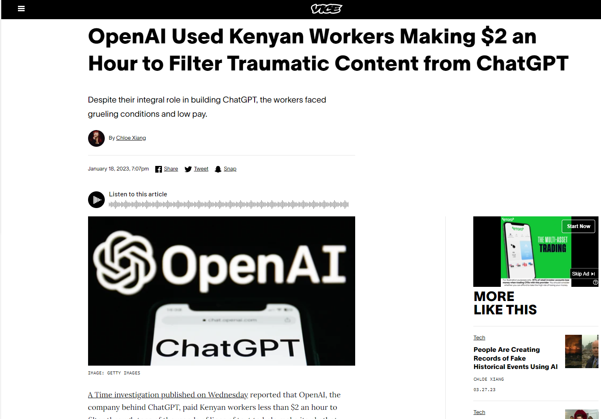

<!DOCTYPE html>
<html lang="en">
  <head>
    <meta charset="utf-8" />
    <meta name="viewport" content="width=device-width, initial-scale=1.0, maximum-scale=1.0, user-scalable=no" />

    <title></title>
    <link rel="stylesheet" href="dist/reveal.css" />
    <link rel="stylesheet" href="dist/theme/night.css" id="theme" />
    <link rel="stylesheet" href="plugin/highlight/zenburn.css" />
	<link rel="stylesheet" href="css/layout.css" />
	<link rel="stylesheet" href="plugin/customcontrols/style.css">
	<link rel="stylesheet" href="plugin/chalkboard/style.css">

	<link rel="stylesheet" href="plugin/reveal-pointer/pointer.css" />

    <link rel="stylesheet" href="css/videolayout.css" />

    <script defer src="dist/fontawesome/all.min.js"></script>

	<script type="text/javascript">
		var forgetPop = true;
		function onPopState(event) {
			if(forgetPop){
				forgetPop = false;
			} else {
				parent.postMessage(event.target.location.href, "app://obsidian.md");
			}
        }
		window.onpopstate = onPopState;
		window.onmessage = event => {
			if(event.data == "reload"){
				window.document.location.reload();
			}
			forgetPop = true;
		}

		function fitElements(){
			const itemsToFit = document.getElementsByClassName('fitText');
			for (const item in itemsToFit) {
				if (Object.hasOwnProperty.call(itemsToFit, item)) {
					var element = itemsToFit[item];
					fitElement(element,1, 1000);
					element.classList.remove('fitText');
				}
			}
		}

		function fitElement(element, start, end){

			let size = (end + start) / 2;
			element.style.fontSize = `${size}px`;

			if(Math.abs(start - end) < 1){
				while(element.scrollHeight > element.offsetHeight){
					size--;
					element.style.fontSize = `${size}px`;
				}
				return;
			}

			if(element.scrollHeight > element.offsetHeight){
				fitElement(element, start, size);
			} else {
				fitElement(element, size, end);
			}		
		}


		document.onreadystatechange = () => {
			fitElements();
			if (document.readyState === 'complete') {
				if (window.location.href.indexOf("?export") != -1){
					parent.postMessage(event.target.location.href, "app://obsidian.md");
				}
				if (window.location.href.indexOf("print-pdf") != -1){
					let stateCheck = setInterval(() => {
						clearInterval(stateCheck);
						window.print();
					}, 250);
				}
			}
	};


        </script>
  </head>
  <body>
    <div class="reveal">
      <div class="slides"><section  data-markdown><script type="text/template">
        <div>
	        <a href="../index.html"><i class="fa fa-arrow-left"></i>Back to HomePage</a>
        </div>
      </script></section><section  data-markdown>
<script type="text/template"><!-- .slide: class="drop" -->
<div class="" style="position: absolute; left: 0px; top: 0px; height: 540px; width: 960px; min-height: 540px; display: flex; flex-direction: column; align-items: center; justify-content: center" absolute="true">

<div class="" style="position: absolute; left: 0px; top: 0px; height: 540px; width: 960px; min-height: 540px; display: flex; flex-direction: column; align-items: center; justify-content: center" absolute="true">

## About...

<iframe width="650" height="450" src="https://www.youtube.com/embed/-P-ein58laA?si=M7p1yJ2tt0UB40Av&amp;controls=0&amp;autoplay=0" frameborder="0" allow="accelerometer; autoplay; clipboard-write; encrypted-media; gyroscope; picture-in-picture; web-share" allowfullscreen></iframe>
</div></script></section><section  data-markdown><script type="text/template"><!-- .slide: class="drop" -->


## AI / AGI
Automation, usability and potential consequences for society
> By Asahi Cantu
</div></script></section><section  data-markdown><script type="text/template"><!-- .slide: class="drop" -->
<div class="" style="position: absolute; left: 0px; top: 0px; height: 540px; width: 960px; min-height: 540px; display: flex; flex-direction: column; align-items: center; justify-content: center" absolute="true">

## Prelude
> "There are decades where nothing happens; and there are weeks where decades happen..."

\- Vladimir Ilyich Lenin
</div></script></section><section  data-markdown><script type="text/template"><!-- .slide: class="drop" -->
<div class="" style="position: absolute; left: 0px; top: 0px; height: 540px; width: 960px; min-height: 540px; display: flex; flex-direction: column; align-items: center; justify-content: center" absolute="true">

<video data-autoplay controls>
	<source src="rsc/AI/uncanny.mp4" type="video/mp4"></source>
</video>
</div></script></section><section  data-markdown><script type="text/template"><!-- .slide: class="drop" -->
<div class="" style="position: absolute; left: 0px; top: 0px; height: 540px; width: 960px; min-height: 540px; display: flex; flex-direction: column; align-items: center; justify-content: center" absolute="true">

<div class="" style="position: absolute; left: 0%; top: 0%; height: 20%; width: 100%; display: flex; flex-direction: column; align-items: center; justify-content: center" >

## <i class="fas fa-user"></i> About me ...  
</div>

<div class="" style="position: absolute; left: 0%; top: 20%; height: 55%; width: 40%; display: flex; flex-direction: column; align-items: center; justify-content: center" >

* Software engineer
*  Msc. Data science
</div>

<div class="" style="position: absolute; left: 40%; top: 20%; height: 55%; width: 60%; display: flex; flex-direction: column; align-items: center; justify-content: center" >

* Capgemini
* Fullstack dev
* STID Project
</div>
</div></script></section><section  data-markdown><script type="text/template"><!-- .slide: class="drop" -->
<div class="" style="position: absolute; left: 0px; top: 0px; height: 540px; width: 960px; min-height: 540px; display: flex; flex-direction: column; align-items: center; justify-content: center" absolute="true">

## In the beginning...
* NLP (Natural language processing)
	* Text vectorization
	* Summarizing
	* Sentiment analysis
* BERT (2018)
	* Bidirectional Encoder Representation from Transofrmers
</div>

<aside class="notes"><p>![[notes/Slide1]]</p>
</aside></script></section><section  data-markdown><script type="text/template"><!-- .slide: class="drop" -->
<div class="" style="position: absolute; left: 0px; top: 0px; height: 540px; width: 960px; min-height: 540px; display: flex; flex-direction: column; align-items: center; justify-content: center" absolute="true">

## About transformers

</div></script></section><section  data-markdown><script type="text/template"><!-- .slide: class="drop" -->
<div class="" style="position: absolute; left: 0px; top: 0px; height: 540px; width: 960px; min-height: 540px; display: flex; flex-direction: column; align-items: center; justify-content: center" absolute="true">

* Sequences, (text translation, best possible solution probability) 
*  Semi-supervised learning
* Pretrained (Unsupervised)
* Attention / Parallel
* Fined-Tunning (Supervised)
</div>

<aside class="notes"><p>This  research by google was indeed so meaningful, back then I did not know the impact such paper had made to the computer science and Artificial intelligence research, IT turns out that all companies realized the breakthrough of the transformers and began to make use of it When this happened researchers realized how a massive change in the world of language models and Natural Language Processing could be achieved to process and generate &quot;knowledge&quot;, text summarization, sentiment analysys and effective machine leargning under spoken language 
I am highlighning this because 5 years ago we were just scratching and refining the science of what today is Chat GPT, and September 2022, a community version of ChatGPT was released to the public</p>
</aside></script></section><section  data-markdown><script type="text/template"><!-- .slide: class="drop" -->
<div class="" style="position: absolute; left: 0px; top: 0px; height: 540px; width: 960px; min-height: 540px; display: flex; flex-direction: column; align-items: center; justify-content: center" absolute="true">

### The advent of GPT
Generative Pre-Trained  Transformer (Nov. 2022) 

</div>


</aside></script></section><section  data-markdown><script type="text/template"><!-- .slide: class="drop" -->
<div class="" style="position: absolute; left: 0px; top: 0px; height: 540px; width: 960px; min-height: 540px; display: flex; flex-direction: column; align-items: center; justify-content: center" absolute="true">


</div>

<aside class="notes"><p>![[notes/Slide3]]</p>
</aside></script></section><section  data-markdown><script type="text/template"><!-- .slide: class="drop" -->
<div class="" style="position: absolute; left: 0px; top: 0px; height: 540px; width: 960px; min-height: 540px; display: flex; flex-direction: column; align-items: center; justify-content: center" absolute="true">

# Gr<span style="color:red">AI</span>ef

</div>

<aside class="notes"><p>![[notes/slide4]]</p>
</aside></script></section><section  data-markdown><script type="text/template"><!-- .slide: class="drop" -->
<div class="" style="position: absolute; left: 0px; top: 0px; height: 540px; width: 960px; min-height: 540px; display: flex; flex-direction: column; align-items: center; justify-content: center" absolute="true">

## Denial
* Generative
	* Text
	* Image
	* Music
	* Video
	* Voice
</div></script></section><section  data-markdown><script type="text/template"><!-- .slide: class="drop" -->
<div class="" style="position: absolute; left: 0px; top: 0px; height: 540px; width: 960px; min-height: 540px; display: flex; flex-direction: column; align-items: center; justify-content: center" absolute="true">


</div></script></section><section  data-markdown><script type="text/template"><!-- .slide: class="drop" -->
<div class="" style="position: absolute; left: 0px; top: 0px; height: 540px; width: 960px; min-height: 540px; display: flex; flex-direction: column; align-items: center; justify-content: center" absolute="true">


</div></script></section><section  data-markdown><script type="text/template"><!-- .slide: class="drop" -->
<div class="" style="position: absolute; left: 0px; top: 0px; height: 540px; width: 960px; min-height: 540px; display: flex; flex-direction: column; align-items: center; justify-content: center" absolute="true">

###### July 2022. Blake Lemoine (google) claiming LamDA is sentient (fired)
<iframe width="600" height="400" src="https://www.youtube.com/embed/LWiM-LuRe6w?si=dHDQJgeK5cghLb8s&amp;start=812" frameborder="0" allow="accelerometer; autoplay; clipboard-write; encrypted-media; gyroscope; picture-in-picture; web-share" allowfullscreen></iframe>
	
###### In 2022 we would be certain that words were generated by humans

</div>

<aside class="notes"><p>At the beginning I could not believe it, it was scary to see what the model was capable of doing, dialogs were so deep and could even see myself asking for polite questions ..</p>
</aside></script></section><section  data-markdown><script type="text/template"><!-- .slide: class="drop" -->
<div class="" style="position: absolute; left: 0px; top: 0px; height: 540px; width: 960px; min-height: 540px; display: flex; flex-direction: column; align-items: center; justify-content: center" absolute="true">

#### Sentient?

<iframe width="600" height="400" src="https://www.youtube.com/embed/LWiM-LuRe6w?si=dHDQJgeK5cghLb8s&amp;start=1770" frameborder="0" allow="accelerometer; autoplay; clipboard-write; encrypted-media; gyroscope; picture-in-picture; web-share" allowfullscreen></iframe>
</div>

<aside class="notes"><p>We are asking the wrong question…</p>
<ul>
<li>AI has managed to &quot;hack the Operating System&quot; of humans</li>
</ul>
</aside></script></section><section  data-markdown><script type="text/template"><!-- .slide: class="drop" -->
<div class="" style="position: absolute; left: 0px; top: 0px; height: 540px; width: 960px; min-height: 540px; display: flex; flex-direction: column; align-items: center; justify-content: center" absolute="true">

## Anxiety
* March 29th 2023
	*  Calls to stop AI research for 6 months
* Deep fakes
* Generative  *
</div>

<aside class="notes"><p>So i started developing anxiety
Start consuming lots of content about catastrophic and bad use of AI
AI learns bengali by itself
Can communicate with animals
Can learn/decipher any known language in the world?
Generative…
    Child pornography
    Movies music..
    How can we defend against that?
    We will need personal agents adapted
    Right to privacy - Never give up privacy
    Hyper -
        Individuality, connectivity
        The extension of respect and indivduality will extend the borders - May be it will be harder
        Sam altman World coin 
        AI Agents</p>
</aside></script></section><section  data-markdown><script type="text/template"><!-- .slide: class="drop" -->
<div class="" style="position: absolute; left: 0px; top: 0px; height: 540px; width: 960px; min-height: 540px; display: flex; flex-direction: column; align-items: center; justify-content: center" absolute="true">


</div></script></section><section  data-markdown><script type="text/template"><!-- .slide: class="drop" -->
<div class="" style="position: absolute; left: 0px; top: 0px; height: 540px; width: 960px; min-height: 540px; display: flex; flex-direction: column; align-items: center; justify-content: center" absolute="true">


</div></script></section><section  data-markdown><script type="text/template"><!-- .slide: class="drop" -->
<div class="" style="position: absolute; left: 0px; top: 0px; height: 540px; width: 960px; min-height: 540px; display: flex; flex-direction: column; align-items: center; justify-content: center" absolute="true">

# AI Crime Scenarios
</div></script></section><section  data-markdown><script type="text/template"><!-- .slide: class="drop" -->
<div class="" style="position: absolute; left: 0px; top: 0px; height: 540px; width: 960px; min-height: 540px; display: flex; flex-direction: column; align-items: center; justify-content: center" absolute="true">

### High-concern
* Audio/Video Impersonation
* Driverless vehicles as weapons
* Tailored Phishing
* Disrupting AI controlled systems
* Large-scale blackmail
* Authored fake news
</div></script></section><section  data-markdown><script type="text/template"><!-- .slide: class="drop" -->
<div class="" style="position: absolute; left: 0px; top: 0px; height: 540px; width: 960px; min-height: 540px; display: flex; flex-direction: column; align-items: center; justify-content: center" absolute="true">

### Mid-concern
* Military Robots
* Snake oil (fraudulent services)
* Data poisoning
* Learning-based cyber-attacks
* Autonomous attack drones
* Online eviction (denial of access)
notes:
* Tricking face recognition
* Finanical market manipulation
</div></script></section><section  data-markdown><script type="text/template"><!-- .slide: class="drop" -->
<div class="" style="position: absolute; left: 0px; top: 0px; height: 540px; width: 960px; min-height: 540px; display: flex; flex-direction: column; align-items: center; justify-content: center" absolute="true">

### Low-concern
* Bias exploitation
* Evading AI detection
* AI-authored fake reviews
* Forgery (fake content generation)
</div></script></section><section  data-markdown><script type="text/template"><!-- .slide: class="drop" -->
<div class="" style="position: absolute; left: 0px; top: 0px; height: 540px; width: 960px; min-height: 540px; display: flex; flex-direction: column; align-items: center; justify-content: center" absolute="true">

## Depression - Doomed?
* Code in github (Copilots)
* Loss of self consciousness
* Something is  going to break  - out of control
</div></script></section><section  data-markdown><script type="text/template"><!-- .slide: class="drop" -->
<div class="" style="position: absolute; left: 0px; top: 0px; height: 540px; width: 960px; min-height: 540px; display: flex; flex-direction: column; align-items: center; justify-content: center" absolute="true">

## Job-fusion
- Transport/Supply chain
- Medicine
- Code
- Education
- Management
</div></script></section><section  data-markdown><script type="text/template"><!-- .slide: class="drop" -->
<div class="" style="position: absolute; left: 0px; top: 0px; height: 540px; width: 960px; min-height: 540px; display: flex; flex-direction: column; align-items: center; justify-content: center" absolute="true">

## Barganing
> ...  But machines have no feelings ...
* No need to have "human" feelings
</div></script></section><section  data-markdown><script type="text/template"><!-- .slide: class="drop" -->
<div class="" style="position: absolute; left: 0px; top: 0px; height: 540px; width: 960px; min-height: 540px; display: flex; flex-direction: column; align-items: center; justify-content: center" absolute="true">

> ... But machines cannot do...

* Technology respected so far our 5 senses
</div></script></section><section  data-markdown><script type="text/template"><!-- .slide: class="drop" -->
<div class="" style="position: absolute; left: 0px; top: 0px; height: 540px; width: 960px; min-height: 540px; display: flex; flex-direction: column; align-items: center; justify-content: center" absolute="true">

> ...  But machines cannot code as good as...
* (GitHub)~30-40%  of  source code is being written by AI
	* Copilot
</div></script></section><section  data-markdown><script type="text/template"><!-- .slide: class="drop" -->
<div class="" style="position: absolute; left: 0px; top: 0px; height: 540px; width: 960px; min-height: 540px; display: flex; flex-direction: column; align-items: center; justify-content: center" absolute="true">

* Machines are tought by machines 
* Write some code to serve other machines 
	* Affect the WWW
* Have own offspring
</div></script></section><section  data-markdown><script type="text/template"><!-- .slide: class="drop" -->
<div class="" style="position: absolute; left: 0px; top: 0px; height: 540px; width: 960px; min-height: 540px; display: flex; flex-direction: column; align-items: center; justify-content: center" absolute="true">

## Acceptance
* The information you consume <span style="color:red">like it or not</span> will affect your behavior
* Beware of the emergent properties of AI
</div></script></section><section  data-markdown><script type="text/template"><!-- .slide: class="drop" -->
<div class="" style="position: absolute; left: 0px; top: 0px; height: 540px; width: 960px; min-height: 540px; display: flex; flex-direction: column; align-items: center; justify-content: center" absolute="true">

### Problems of tremendous complexity

- Social inequality / Famine / Democracy / Healthcare / Immigration
- Climate change / Energy
- Child education
- War
</div></script></section><section  data-markdown><script type="text/template"><!-- .slide: class="drop" -->
<div class="" style="position: absolute; left: 0px; top: 0px; height: 540px; width: 960px; min-height: 540px; display: flex; flex-direction: column; align-items: center; justify-content: center" absolute="true">

## Acceptance

<iframe src="https://www.worldometers.info/world-population/" style="width: 100%; height: 600px; border: 0px none;" ></iframe>
</div></script></section><section  data-markdown><script type="text/template"><!-- .slide: class="drop" -->
<div class="" style="position: absolute; left: 0px; top: 0px; height: 540px; width: 960px; min-height: 540px; display: flex; flex-direction: column; align-items: center; justify-content: center" absolute="true">

<iframe src="https://ourworldindata.org/explorers/food-prices?facet=none&country=NGA~BGD~IND~ETH~MEX~USA~BRA~GBR&Diet=Healthy+diet&Cost+or+Affordability=Affordability&Affordability+metric=Share+that+cannot+affordhideControls&hideControls=true" loading="lazy" style="width: 100%; height: 600px; border: 0px none;"></iframe>
</div></script></section><section  data-markdown><script type="text/template"><!-- .slide: class="drop" -->
<div class="" style="position: absolute; left: 0px; top: 0px; height: 540px; width: 960px; min-height: 540px; display: flex; flex-direction: column; align-items: center; justify-content: center" absolute="true">


<iframe src="https://ourworldindata.org/grapher/happiness-cantril-ladder" loading="lazy" style="width: 100%; height: 600px; border: 0px none;"></iframe>
</div></script></section><section  data-markdown><script type="text/template"><!-- .slide: class="drop" -->
<div class="" style="position: absolute; left: 0px; top: 0px; height: 540px; width: 960px; min-height: 540px; display: flex; flex-direction: column; align-items: center; justify-content: center" absolute="true">

<iframe src="https://ourworldindata.org/grapher/self-reported-loneliness-older-adults" loading="lazy" style="width: 100%; height: 600px; border: 0px none;"></iframe>
</div></script></section><section  data-markdown><script type="text/template"><!-- .slide: class="drop" -->
<div class="" style="position: absolute; left: 0px; top: 0px; height: 540px; width: 960px; min-height: 540px; display: flex; flex-direction: column; align-items: center; justify-content: center" absolute="true">


	

## Ask  - Conceal

* Why do I  believe what I believe? / What are my values?
* When is it enough? / How much is enough?
* What makes us human?

</div>

<aside class="notes"><p>How to stop and be satisfied with what we have
Learn how to be satisfied - not necessarly the happiest
We are very good in acquiring power, but Power does not makes us happy</p>
<p>We are unstoppable, translate power into happiness</p>
<p>Think if it is really necessary to….
The prissoners dilemma
Second order consequences
How do we define sentient, how do we still define consciousness
sentinent [born at a certain point on time]
ability to sense the world environment
Awarenesss and response to the environment</p>
</aside></script></section><section  data-markdown><script type="text/template"><!-- .slide: class="drop" -->
<div class="" style="position: absolute; left: 0px; top: 0px; height: 540px; width: 960px; min-height: 540px; display: flex; flex-direction: column; align-items: center; justify-content: center" absolute="true">

##  Regulations in the near future

* Make it mandatory to disclose non-human generated content
* Government protection and regulation
* Enterprise accountability
* Education
</div></script></section><section  data-markdown><script type="text/template"><!-- .slide: class="drop" -->
<div class="" style="position: absolute; left: 0px; top: 0px; height: 540px; width: 960px; min-height: 540px; display: flex; flex-direction: column; align-items: center; justify-content: center" absolute="true">

## Find the balance
 * Develop critical thinking
 * Educate your loved ones
 * Biases - multiplier effect
 * Emotional intelligence
</div></script></section><section  data-markdown><script type="text/template"><!-- .slide: class="drop" -->
<div class="" style="position: absolute; left: 0px; top: 0px; height: 540px; width: 960px; min-height: 540px; display: flex; flex-direction: column; align-items: center; justify-content: center" absolute="true">

## As developers...
* Use for individual benefit
* Tagging AI generated content 
* Selective privacy
* Create universal accessible systems
</div></script></section><section  data-markdown><script type="text/template"><!-- .slide: class="drop" -->
<div class="" style="position: absolute; left: 0px; top: 0px; height: 540px; width: 960px; min-height: 540px; display: flex; flex-direction: column; align-items: center; justify-content: center" absolute="true">

## Do not miss the wave
* Learn to behave ethically
* Reinforcement learning with human feedbacks
* Do not use AI in an unethical way
</div></script></section><section  data-markdown><script type="text/template"><!-- .slide: class="drop" -->
<div class="" style="position: absolute; left: 0px; top: 0px; height: 540px; width: 960px; min-height: 540px; display: flex; flex-direction: column; align-items: center; justify-content: center" absolute="true">
<div style="color:red">
	<p>This is...<p>
	<ul>
		<li>Out of my control</li>
		<li>A new reality</li>	
	</ul>
</div>
<div style="color:yellow">
	<p>But I can...<p>
	<ul>
		<li>Spend time and teach my beloved ones</li>
		<li>Be part of the new social fabric</li>	
	</ul>
</div>
</div></script></section><section  data-markdown><script type="text/template"><!-- .slide: class="drop" -->
<div class="" style="position: absolute; left: 0px; top: 0px; height: 540px; width: 960px; min-height: 540px; display: flex; flex-direction: column; align-items: center; justify-content: center" absolute="true">

#### Epilogue - Madmax (1979)
<video controls witdh><source src="rsc/AI/madmax.mp4" type="video/mp4"></video>
</div>

<aside class="notes"><p>I&#39;ve seen things, you people wouldn&#39;t believe, hmmm.      ... attack ships on fire off the shoulder of Orion.     I&#39;ve watched see Beams glitter in the dark near the Tannhauser Gate. All those moments, will be lost in time like tears in rain...&quot; Time to die...</p>
</aside></script></section><section  data-markdown><script type="text/template"><!-- .slide: class="drop" -->
<div class="" style="position: absolute; left: 0px; top: 0px; height: 540px; width: 960px; min-height: 540px; display: flex; flex-direction: column; align-items: center; justify-content: center" absolute="true">

### The end
#### Are you?...

</div></script></section><section ><section data-markdown><script type="text/template"><!-- .slide: class="drop" -->
<div class="" style="position: absolute; left: 0px; top: 0px; height: 540px; width: 960px; min-height: 540px; display: flex; flex-direction: column; align-items: center; justify-content: center" absolute="true">

#### Useful references

##### News

* [Move 37 Explained](https://www.youtube.com/watch?v=vI9BllT7ovg)
  [Integrated AI - The sky is entrancing (mid-2023 AI retrospective)](https://www.youtube.com/watch?v=RnkyM74-LAw)
* [The race to understand the exhilarating, dangerous world of language AI](https://www.technologyreview.com/2021/05/20/1025135/ai-large-language-models-bigscience-project/)
</div></script></section><section data-markdown><script type="text/template"><!-- .slide: class="drop" -->
<div class="" style="position: absolute; left: 0px; top: 0px; height: 540px; width: 960px; min-height: 540px; display: flex; flex-direction: column; align-items: center; justify-content: center" absolute="true">

##### About LLM's
* [The Large Language Model (LLM) Index | Sapling(finetuned, sizes available, and pricing.)](https://sapling.ai/llm/index)
* [large-language-models](https://sourceforge.net/software/large-language-models/)
* [AI programming tool Copilot helps write up to 30% of code on GitHub](https://www.axios.com/2021/10/27/copilot-artificial-intelligence-coding-github)
* [Is Artificial Intelligence Our “Oppenheimer Moment”? Mo Gawdat’s Warning To The World](https://www.youtube.com/watch?v=Ae4o92F4tVM)
* [Op-Ed: Google AI learns Bengali, and they don’t know why?](https://www.digitaljournal.com/tech-science/op-ed-google-ai-learns-bengali-and-they-dont-know-why/article)
</div></script></section><section data-markdown><script type="text/template"><!-- .slide: class="drop" -->
<div class="" style="position: absolute; left: 0px; top: 0px; height: 540px; width: 960px; min-height: 540px; display: flex; flex-direction: column; align-items: center; justify-content: center" absolute="true">

- [Google Surprised When Experimental AI Learns Language It Was Never Trained On](https://futurism.com/the-byte/google-ai-bengali)
- [GitHub Copilot AI Tech Upgraded, Already Generates 61% of Java Code -- Visual Studio Magazine](https://visualstudiomagazine.com/articles/2023/02/15/copilot-upgrade.aspx)

- [Stability AI CEO: There Will Be No (Human) Programmers in Five Years - Decrypt](https://decrypt.co/147191/no-human-programmers-five-years-ai-stability-ceo)

- [Why AI Is No Longer About Technology - Ex Google Mo Gawdat Predicts Our Future With Happiness](https://www.youtube.com/watch?v=-OZJRx5FREI)
</div></script></section><section data-markdown><script type="text/template"><!-- .slide: class="drop" -->
<div class="" style="position: absolute; left: 0px; top: 0px; height: 540px; width: 960px; min-height: 540px; display: flex; flex-direction: column; align-items: center; justify-content: center" absolute="true">

- [Mo Gawdat: Ex-Google Officer Warns About the Dangers of AI, Urges All to Prepare Now!](https://www.youtube.com/watch?v=bJAHhZMtGsU)

- [Large Language Models 101: History, Evolution and Future](https://www.scribbledata.io/large-language-models-history-evolutions-and-future/)

- [2023-Alan-D-Thompson-AI-Bubbles-Optimal-Rev-4.pdf](https://s10251.pcdn.co/pdf/2023-Alan-D-Thompson-AI-Bubbles-Optimal-Rev-4.pdf)

- [A Few Thoughts on the Explosion and Distribution of LLMs and other AI](https://danballard.com/2023/03/22/thoughts-on-ai-explosion-and-distribution/)
</div></script></section><section data-markdown><script type="text/template"><!-- .slide: class="drop" -->
<div class="" style="position: absolute; left: 0px; top: 0px; height: 540px; width: 960px; min-height: 540px; display: flex; flex-direction: column; align-items: center; justify-content: center" absolute="true">

- [Against LLM maximalism · Explosion](https://explosion.ai/blog/against-llm-maximalism)

- [The race to understand the exhilarating, dangerous world of language AI](https://www.technologyreview.com/2021/05/20/1025135/ai-large-language-models-bigscience-project/)

- [Eric Schmidt: This is how AI will transform the way science gets done](https://www.technologyreview.com/2023/07/05/1075865/eric-schmidt-ai-will-transform-science/)

- [AI and the future of humanity | Yuval Noah Harari at the Frontiers Forum](https://www.youtube.com/watch?v=LWiM-LuRe6w&t=1906s)

- [Google fires engineer who contended its AI technology was sentient | CNN Business](https://edition.cnn.com/2022/07/23/business/google-ai-engineer-fired-sentient/index.html)
</div></script></section><section data-markdown><script type="text/template"><!-- .slide: class="drop" -->
<div class="" style="position: absolute; left: 0px; top: 0px; height: 540px; width: 960px; min-height: 540px; display: flex; flex-direction: column; align-items: center; justify-content: center" absolute="true">

- [Exclusive: The $2 Per Hour Workers Who Made ChatGPT Safer](https://time.com/6247678/openai-chatgpt-kenya-workers/)

- [History Of ChatGPT: A Timeline Of The Meteoric Rise Of Generative AI Chatbots](https://www.searchenginejournal.com/history-of-chatgpt-timeline/488370/#close)

- [WHY GOOGLE New AI ‘GEMINI’ TERRIFIES The ENTIRE Industry!](https://www.youtube.com/watch?v=GDwARowc-yc)
</div></script></section><section data-markdown><script type="text/template"><!-- .slide: class="drop" -->
<div class="" style="position: absolute; left: 0px; top: 0px; height: 540px; width: 960px; min-height: 540px; display: flex; flex-direction: column; align-items: center; justify-content: center" absolute="true">

## Large language Models

[2023 LifeArchitect.ai data (shared)](https://docs.google.com/spreadsheets/d/1O5KVQW1Hx5ZAkcg8AIRjbQLQzx2wVaLl0SqUu-ir9Fs/edit#gid=1158069878)
</div></script></section><section data-markdown><script type="text/template"><!-- .slide: class="drop" -->
<div class="" style="position: absolute; left: 0px; top: 0px; height: 540px; width: 960px; min-height: 540px; display: flex; flex-direction: column; align-items: center; justify-content: center" absolute="true">

### AI Concerns (Videos)

- [Why AI Is No Longer About Technology - Ex Google Mo Gawdat Predicts Our Future With Happiness](https://www.youtube.com/watch?v=-OZJRx5FREI)

- [MEGATHREAT: Why AI Is So Dangerous & How It Could Destroy Humanity | Mo Gawdat](https://www.youtube.com/watch?v=itY6VWpdECc)
</div></script></section><section data-markdown><script type="text/template"><!-- .slide: class="drop" -->
<div class="" style="position: absolute; left: 0px; top: 0px; height: 540px; width: 960px; min-height: 540px; display: flex; flex-direction: column; align-items: center; justify-content: center" absolute="true">

- [CARL JUNG: El hombre moderno en busca de un alma | El problema espiritual de Occidente](https://youtu.be/Ts60CP5qubI?t=62)

- [Is Artificial Intelligence Our “Oppenheimer Moment”? Mo Gawdat’s Warning To The World](https://www.youtube.com/watch?v=Ae4o92F4tVM)
</div></script></section><section data-markdown><script type="text/template"><!-- .slide: class="drop" -->
<div class="" style="position: absolute; left: 0px; top: 0px; height: 540px; width: 960px; min-height: 540px; display: flex; flex-direction: column; align-items: center; justify-content: center" absolute="true">

## Social concerns

- [AI and the future of humanity | Yuval Noah Harari at the Frontiers Forum](https://www.youtube.com/watch?v=LWiM-LuRe6w)

- [GitHub Copilot, your AI pair programmer - Training](https://learn.microsoft.com/en-us/training/modules/ntroduction-to-github-copilot2-github-copilot-your-ai-pair-programmer)

- [Rebeca Hwang | Inteligencia artificial y humanidad | Aprender de Grandes #153](https://youtu.be/rClYbGGzyek?t=1197)
</div></script></section><section data-markdown><script type="text/template"><!-- .slide: class="drop" -->
<div class="" style="position: absolute; left: 0px; top: 0px; height: 540px; width: 960px; min-height: 540px; display: flex; flex-direction: column; align-items: center; justify-content: center" absolute="true">

- [Exclusive: The $2 Per Hour Workers Who Made ChatGPT Safer](https://time.com/6247678/openai-chatgpt-kenya-workers/)

- [Worldcoin: Sam Altman launches eyeball scanning crypto coin](https://www.bbc.com/news/technology-66128111)

- [Yuval Noah Harari Speaks to Young Readers & Teachers About ‘Unstoppable Us’ | Aprendemos Juntos](https://www.youtube.com/watch?v=flQiPH_IFcI)
</div></script></section><section data-markdown><script type="text/template"><!-- .slide: class="drop" -->
<div class="" style="position: absolute; left: 0px; top: 0px; height: 540px; width: 960px; min-height: 540px; display: flex; flex-direction: column; align-items: center; justify-content: center" absolute="true">

## Animal language communciation

- [Can AI unlock the secrets of animal communication? | Engadget](https://www.engadget.com/can-ai-unlock-the-secrets-of-animal-communication-170040760.htm)

- [Can artificial intelligence really help us talk to the animals?](https://www.theguardian.com/science/2022/jul/31/can-artificial-intelligence-really-help-us-talk-to-the-animals)

- [Humans May Be Shockingly Close to Decoding the Language of Animals](https://www.popularmechanics.com/science/animals/a42689511/humans-could-decode-animal-language/)
</div></script></section><section data-markdown><script type="text/template"><!-- .slide: class="drop" -->
<div class="" style="position: absolute; left: 0px; top: 0px; height: 540px; width: 960px; min-height: 540px; display: flex; flex-direction: column; align-items: center; justify-content: center" absolute="true">

## AI And code

- [Almost 30 percent of new GitHub code is written with AI assistance](https://www.techspot.com/news/91984-almost-30-percent-new-github-code-written-ai.html)
- [GitHub Copilot AI Tech Upgraded, Already Generates 61% of Java Code -- Visual Studio Magazine](https://visualstudiomagazine.com/articles/2023/02/15/copilot-upgrade.aspx)

- [Awesome ChatGPT Prompts](https://prompts.chat/)

--- 
# Draft slides
## In Norway
[Statistisk sentralbyrå (ssb.no)](https://www.ssb.no/)
<iframe src="https://www.ssb.no/" style="width: 100%; height: 600px; border: 0px none;"></frame>
<iframe src="https://www.worldometers.info/demographics/norway-demographics/#life-exp" style="width: 100%; height: 600px; border: 0px none;"></iframe>
</div></script></section></section><section  data-markdown><script type="text/template"><!-- .slide: class="drop" -->
<div class="" style="position: absolute; left: 0px; top: 0px; height: 540px; width: 960px; min-height: 540px; display: flex; flex-direction: column; align-items: center; justify-content: center" absolute="true">

<aside class="notes"><p>What are the current values for humanity so we tan transmit these values to new AI models?</p>
<p>Big world problems solving</p>
<ul>
<li>Economic</li>
<li>Politic</li>
<li>Social</li>
<li>Transportation</li>
<li>Logistics,</li>
<li>Energy</li>
<li>Energy storage
  We have to specialize</li>
</ul>
<p>Happiness = events - expectations</p>
<p>Purpose has been messed up</p>
<p>Whatever happens the answer relies in the collection short-mid-long term  our present decisions</p>
<p>May 14, 2023</p>
<ul>
<li>harari 
  13:18 AI has become sentient - Google engineer
  31:00 I just told you a story..
AI has the operating system of human kind</li>
</ul>
<p>Min 29:39</p>
<p>Carl jung y su creencia sobre el espiritismo  / Carl jung modern man</p>
<p>Back to architecture / Architectural behaviour</p>
<p>Resilience of human beings, we will adpat and find our own way,
Let is trust in us being human,
What can I do to add value
Impotence and hopelesness will just block us
Lets put our focus in what we want and not to avoid what I fear</p>
<p>I am one individual and only one
I cannot avoid it
But I cannot give up to what is in my hands, what I can do</p>
<p>Generative AI is making that the variables in the real world which probability used to be infimum will suddenly have a <strong>multiplier effect</strong> in the real world, which will triger exponential and logarithmic phenommenons making what years or months before was improbable a new reality.</p>
<p>How can IA help us be advise for the little we know, for the new things to come</p>
<p>World is just getting more and more complex
It is impossible just for a single human or group of people to assess and get to know things
One one hand we have trusted IA&#39;s that can work and help to be advisors
On the other hand we have Biased IA&#39;s which we may not fully trust</p>
<p>No human (hardly few of them) truly know how such machines have managed to learn
Be afraid not of the AI tech, but the orchestrators</p>
<p>With big projects, in IT sector, where project plans and budget have been settled for the next 5 years with current technologies, and restrictions .. How can we overcome this Technology gap ?</p>
<p>Think of ourselves as bodies with immune system  - To prevents us be harmed from the exterior ,it will just organically, naturally grow to become a hybrid second personality part of us</p>
<p>Think now that all the jobs that are handled by humans aiming to fulfill repetitive tasks aave the potential of being replaced and substituted by robots, and then coordinated-orchestrated</p>
<ul>
<li>And then Github copilot -- is that a must?</li>
<li>Then we have to acknowledge that from now on most of the code will be generated by AI and not us</li>
<li>What works for us . In favor of us will eventually might work against us</li>
</ul>
<p>Just before that researchers spend a year to tune it, tweak it, tag it and use human interaction to refine the model</p>
<blockquote>
<p>you need to take care of your parents when you grow older</p>
</blockquote>
<p>Juatice
Creencias y eatereotipos
Sesogs fáciles de cambiar xin unformacion</p>
<p>How would you feel now if you took a picture of children, someone would take wihtout your permission</p>
<p>Think about where you will guide your attention, what will you consume, what you will produce and to whom
2024.... International elections, global warming goals getting closer</p>
<p>1
10
100
1,000
10,000
100,000
1,000,000
10,000,000
100,000,000
1,000,000,000 x 8</p>
<p>8 billion people</p>
<p>Our right to data ownership
Selective privacy
What will happen to our shadow profiles?
beware of  bubbles...and your own bubbles</p>
<p>Top skill is how you and I connect it very quickly and have a meaninful conversation
If graphic designer is already a must to learn generative
We as developers should be hands on and concern as well on its usage</p>
<p>the 4th inevitable - chart of intelligence 
Morality is part of ultimate protection - life itself created out from abundance
Early stage
Mid-term dystopia - 
You are the one who chooses what to see and what to consume
Teenager stage
in hands of bad ones 
Moral code
GAI
The inevitable</p>
<p>Biased world, word embeddings example, master s9ave, let. Lene go
Slavery nowaday
Africa. 
Uganda workers for open ai
History is told bybwinners
Biasd in DNA</p>
<p>CLUSTERS. OF PEOPLE COMMON GROUND, IMPORTANCE TO FIND A GEBERAL TRUE MEANING SBOUT BEING A HUMAN
HOW MUCH DOES A HUMAN LIGE COST</p>
<p>EUROCENTEIC/WESTERN WHITE PATRIARCHAL SOCIETY </p>
<p>LOOK AT STSTISTICS</p>
<p>MYSOGINISTIC
BCOMOUTERS WERE GENERALLY BUOLT HY THESE PEOPLE</p>
<p>DATA CORPUS
OUR WORLD I DATA FOR GENDER AND POPULATUON</p>
<p>Towards more neutral AI
WE ALL ARE. PART OF THE FABRIC AND FNA OF LLMS, BY OUR SOCIAL MEDIA
FB
TICKTOCK
TWITTER.. ETX</p>
<p>Our la guava has been hacked because our ability to be surprised has changed 
Consumarism
The true beneath being human </p>
<p>Why is sentiment analysis omportsnt
The building blocks for corpus  analysis in our llms</p>
<p>MY PERSONAL VOIDS</p>
<p>Hostory and the manipulation of history</p>
<p>The truth matters </p>
<p>drug abuse, addictions
Behavioural addictions</p>
</div></aside></script></section></div>
    </div>

    <script src="dist/reveal.js"></script>

    <script src="plugin/markdown/markdown.js"></script>
    <script src="plugin/highlight/highlight.js"></script>
    <script src="plugin/zoom/zoom.js"></script>
    <script src="plugin/notes/notes.js"></script>
    <script src="plugin/math/math.js"></script>
	<script src="plugin/mermaid/mermaid.js"></script>
	<script src="plugin/chart/chart.min.js"></script>
	<script src="plugin/chart/plugin.js"></script>
	<script src="plugin/menu/menu.js"></script>
	<script src="plugin/customcontrols/plugin.js"></script>
	<script src="plugin/chalkboard/plugin.js"></script>
	<script src="plugin/reveal-pointer/pointer.js"></script>
	<script src="plugin/elapsed-time-bar/elapsed-time-bar.js"></script>

    <script>
      function extend() {
        var target = {};
        for (var i = 0; i < arguments.length; i++) {
          var source = arguments[i];
          for (var key in source) {
            if (source.hasOwnProperty(key)) {
              target[key] = source[key];
            }
          }
        }
        return target;
      }

	  function isLight(color) {
		let hex = color.replace('#', '');

		// convert #fff => #ffffff
		if(hex.length == 3){
			hex = `${hex[0]}${hex[0]}${hex[1]}${hex[1]}${hex[2]}${hex[2]}`;
		}

		const c_r = parseInt(hex.substr(0, 2), 16);
		const c_g = parseInt(hex.substr(2, 2), 16);
		const c_b = parseInt(hex.substr(4, 2), 16);
		const brightness = ((c_r * 299) + (c_g * 587) + (c_b * 114)) / 1000;
		return brightness > 155;
	}

	var bgColor = getComputedStyle(document.documentElement).getPropertyValue('--r-background-color').trim();
	var isLight = isLight(bgColor);

	if(isLight){
		document.body.classList.add('has-light-background');
	} else {
		document.body.classList.add('has-dark-background');
	}

      // default options to init reveal.js
      var defaultOptions = {
        controls: true,
        progress: true,
        history: true,
        center: true,
        transition: 'default', // none/fade/slide/convex/concave/zoom
        plugins: [
          RevealMarkdown,
          RevealHighlight,
          RevealZoom,
          RevealNotes,
          RevealMath.MathJax3,
		  RevealMermaid,
		  RevealChart,
		  RevealCustomControls,
		  RevealMenu,
	      RevealPointer,
		  RevealChalkboard, 
		  ElapsedTimeBar
        ],


    	allottedTime: 2700 * 1000,

		mathjax3: {
			mathjax: 'plugin/math/mathjax/tex-mml-chtml.js',
		},
		markdown: {
		  gfm: true,
		  mangle: true,
		  pedantic: false,
		  smartLists: false,
		  smartypants: false,
		},

		mermaid: {
			theme: isLight ? 'default' : 'dark',
		},

		customcontrols: {
			controls: [
				{id: 'toggle-overview',
				title: 'Toggle overview (O)',
				icon: '<i class="fa fa-th"></i>',
				action: 'Reveal.toggleOverview();'
				},
				{ icon: '<i class="fa fa-pen-square"></i>',
				title: 'Toggle chalkboard (B)',
				action: 'RevealChalkboard.toggleChalkboard();'
				},
				{ icon: '<i class="fa fa-pen"></i>',
				title: 'Toggle notes canvas (C)',
				action: 'RevealChalkboard.toggleNotesCanvas();'
				},
			]
		},
		menu: {
			loadIcons: false
		}
      };

      // options from URL query string
      var queryOptions = Reveal().getQueryHash() || {};

      var options = extend(defaultOptions, {"width":960,"height":540,"margin":0,"maxScale":4,"controls":true,"progress":true,"slideNumber":"true","transition":"fade","transitionSpeed":"default"}, queryOptions);
    </script>

    <script>
      Reveal.initialize(options);
    </script>
  </body>

  <!-- created with Advanced Slides -->
</html>
